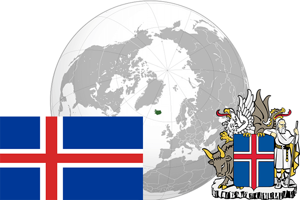

To`liq nomi: Islandiya Respublikasi
Region: Yevropaning shimoliy-g`arbiy qismi
Qonunchilik shakli: Respublika
Mustaqillik kuni: 17-iyun 1944 - yil (Daniyadan)
Poytaxt: Reykyavik
Maydoni: 103 125 km² (dunyoda 101 -o`rinda )
Chegaradosh davlatlari: yo`q
Aholisi: 321 857 (dunyoda 177 - o`rinda, 2016 -yil roʻyxat)
Aholi zichligi: 3,1 /km²
Aholining o`rtacha yoshi: 80,45 yil (82,6 ayollar, 78,3 erkaklar)
Rasmiy tili: island tili
Dini: lyuteriya
Pul birligi: Islandiya kronasi
Telefon prefiksi: +354
Internet domen: .is
Xalqaro tashkilotlarga a`zoligi: BMT (1955 – yildan), Shimoliy Atlantika Shartnomasi (1949-yil)
Dengiz va okeanlarga chiqishi: Atlantika va Shimoliy muz okeanlari
YIM: Butun: $ 12,409 mlrd Jon boshiga $ 36,32 (2011 - yil roʻyxati)
Yirik shaharlari: Reykyavik, Koupavogyur, Xabnarfordyur